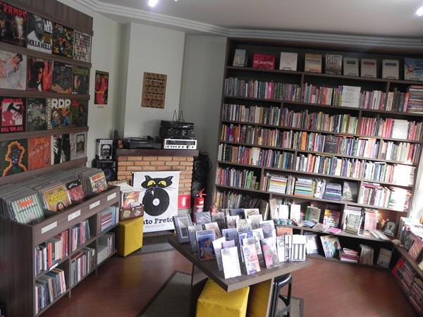

Breve histórico
De acordo com Enilda, a curadora de livros, “A ideia surgiu de um desejo bem antigo de podermos
trabalhar com algo que amamos e que acreditamos ser um motor indispensável na sociedade: a cultura.
Idealizamos durante mais ou menos 3 anos antes de colocar em prática e finalmente abrirmos o espaço.
Nesse tempo, pesquisamos muito, estudamos possibilidades, fomos comprando acervo e, enfim,
preparando o
espaço. Mackey partiu da coleção pessoal dele e do hábito de colecionar discos para elaborar a ideia
de
um comércio de discos usados e novos. Eu já preferi investir nos livros novos, já que, quando
abrimos,
não havia nenhum espaço na cidade que tivesse esse foco.”
Discos

De acordo com Mackey, é fato que o público consumidor de vinil vem aumentando e essa mídia tem sido
resgatada por gerações mais antigas e descoberta pelas mais novas. Os que se interessam pelo vinil
formam um público bem variado, com gostos também diferenciados, mas que passa a curtir a música
nesse
formato, que requer, sim, um certo ritual, um mergulho nessa experiência.” Diz Mackey que “mesmo com
todo o acesso virtual que atualmente se tem à música, ouvir um som em vinil é uma forma diferente de
experimentar a música.”